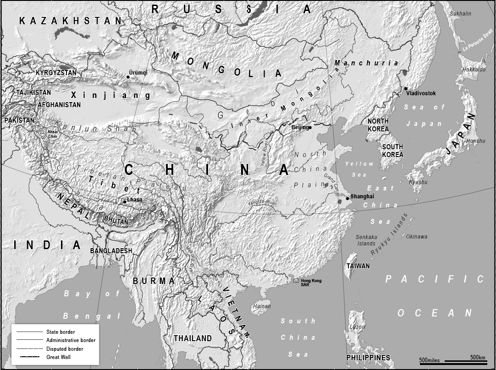
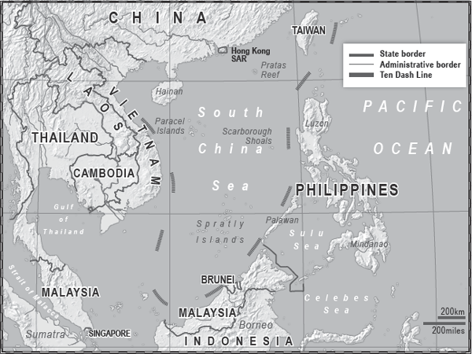

‘China is a civilisation pretending to be a nation.’
Lucian Pye, political scientist

IN OCTOBER 2006, A US NAVAL SUPERCARRIER GROUP LED BY THE 1,000-foot USS Kitty Hawk was confidently sailing through the East China Sea between southern Japan and Taiwan, minding everyone’s business, when, without warning, a Chinese navy submarine surfaced in the middle of the group.
An American aircraft carrier of that size is surrounded by about twelve other warships, with air cover above and submarine cover below. The Chinese vessel, a Song-class attack submarine, may well be very quiet when running on electric power but, still, this was the equivalent to Pepsi-Cola’s management popping up in a Coca-Cola board meeting after listening under the table for half an hour.
The Americans were amazed and angry in equal measure. Amazed because they had no idea a Chinese sub could do that without being noticed, angry because they hadn’t noticed and because they regarded the move as provocative, especially as the sub was within torpedo range of the Kitty Hawk itself. They protested, perhaps too much, and the Chinese said: ‘Oh! What a coincidence, us surfacing in the middle of your battle group which is off our coast, we had no idea.’
This was twenty-first-century reverse gunboat diplomacy; whereas the British used to heave a man-of-war off the coast of some minor power to signal intent, the Chinese hove into view off their own coast with a clear message: ‘We are now a maritime power, this is our time, and this is our sea.’ It has taken 4,000 years, but the Chinese are coming to a port – and a shipping lane – near you.
Until now China has never been a naval power – with its large land mass, multiple borders and short sea routes to trading partners, it had no need to be, and it was rarely ideologically expansive. Its merchants have long sailed the oceans to trade goods, but its navy did not seek territory beyond its region, and the difficulty of patrolling the great sea lanes of the Pacific, Atlantic and Indian Oceans was not worth the effort. It was always a land power, with a lot of land and a lot of people – now nearly 1.4 billion.
The concept of China as an inhabited entity began almost 4,000 years ago. The birthplace of Chinese civilisation is the region known as the North China Plain, which the Chinese refer to as the Central Plain. A large, low-lying tract of nearly 160,000 square miles, it is situated below Inner Mongolia, south of Manchuria, in and around the Yellow River Basin and down past the Yangtze River, which both run east to west. It is now one of the most densely populated areas in the world.
The Yellow River basin is subject to frequent and devastating floods, earning the river the unenviable sobriquet of ‘Scourge of the Sons of Han’. The industrialisation of the region began in earnest in the 1950s and has been rapidly accelerating in the last three decades. The terribly polluted river is now so clogged with toxic waste that it sometimes struggles even to reach the sea. Nevertheless the Yellow River is to China what the Nile is to Egypt – the cradle of its civilisation, where its people learnt to farm, to make paper and gunpowder.
To the north of this proto-China were the harsh lands of the Gobi Desert in what is now Mongolia. To the west the land gradually rises until it becomes the Tibetan Plateau, reaching to the Himalayas. To the south-east and south lies the sea.
The heartland, as the North China Plain is known, was and is a large, fertile plain with two main rivers and a climate that allows rice and soy beans to be harvested twice a season (double-cropping), which encouraged rapid population growth. By 1500 BCE in this heartland, out of hundreds of mini city-states, many warring with each other, emerged the earliest version of a Chinese state – the Shang dynasty. This is where what became known as the Han people emerged, protecting the heartland and creating a buffer zone around them.
The Han now make up over 90 per cent of China’s population and they dominate Chinese politics and business. They are differentiated by Mandarin, Cantonese and many other regional languages, but united by ethnicity and at a political level by the geopolitical impulsion to protect the heartland. Mandarin, which originated in the northern part of the region, is by far the dominant language and is the medium of government, national state television and education. Mandarin is similar to Cantonese and many other languages when written, but very different when spoken.
The heartland is the political, cultural, demographic and – crucially – the agricultural centre of gravity. About a billion people live in this part of China, despite it being just half the size of the United States, which has a population of 322 million. Because the terrain of the heartland lent itself to settlement and an agrarian lifestyle, the early dynasties felt threatened by the non-Han regions which surrounded them, especially Mongolia with its nomadic bands of violent warriors.
China chose the same strategy as Russia: attack as defence, leading to power. As we shall see, there were natural barriers which – if the Han could reach them and establish control – would protect them. It was a struggle over millennia, only fully realised with the annexation of Tibet in 1951.
By the time of the famous Chinese philosopher Confucius (551–479 BCE) there was a strong feeling of Chinese identity and of a divide between civilised China and the ‘barbarous’ regions which surrounded it. This was a sense of identity shared by sixty million or so people.
By 200 BCE China had expanded towards, but not reached, Tibet in the south-west, north to the grasslands of Central Asia and south all the way down to the South China Sea. The Great Wall (known as the Long Wall in China) had been first built by the Qin dynasty (221–207 BCE), and on the map China was beginning to take on what we now recognise as its modern form. It would be more than 2,000 years before today’s borders were fixed, however.
Between 605 and 609 CE the Grand Canal, centuries in the making and today the world’s longest man-made waterway, was extended and finally linked the Yellow River to the Yangtze. The Sui dynasty (581–618 CE) had harnessed the vast numbers of workers under its control and used them to connect existing natural tributaries into a navigable waterway between the two great rivers. This tied the northern and southern Han to each other more closely than ever before. It took several million slaves five years to do the work, but the ancient problem of how to move supplies south to north had been solved – but not the problem which exists to this day, that of flooding.
The Han still warred with each other, but increasingly less so, and by the early eleventh century CE they were forced to concentrate their attention on the waves of Mongols pouring down from the north. The Mongols defeated whichever dynasty, north or south, they came up against and by 1279 their leader Kublai Khan became the first foreigner to rule all of the country as Emperor of the Mongol (Yuan) dynasty. It would be almost ninety years before the Han took charge of their own affairs with the establishment of the Ming dynasty.
By now there was increasing contact with traders and emissaries from the emerging nation states of Europe, such as Spain and Portugal. The Chinese leaders were against any sort of permanent European presence, but increasingly opened up the coastal regions to trade. It remains a feature of China to this day that when China opens up, the coastland regions prosper but the inland areas are neglected. The prosperity engendered by trade has made coastal cities such as Shanghai wealthy, but that wealth has not been reaching the countryside. This has added to the massive influx of people into urban areas and accentuated regional differences.
In the eighteenth century China reached into parts of Burma and Indochina to the south, and Xinjiang in the north-west was conquered, becoming the country’s biggest province. An area of rugged mountains and vast desert basins, Xinjiang is 642,820 square miles, twice the size of Texas – or, to put it another way, you could fit the UK, France, Germany, Austria, Switzerland, the Netherlands and Belgium into it and still have room for Luxembourg. And Liechtenstein.
But, in adding to its size, China also added to its problems. Xinjiang, a region populated by Muslims, was a perennial source of instability, indeed insurrection, as were other regions; but for the Han the buffer was worth the trouble, even more so after the fate which befell the country in the nineteenth and twentieth centuries with the coming of the Europeans.
The imperial powers arrived, the British among them, and carved the country up into spheres of influence. It was, and is, the greatest humiliation the Chinese suffered since the Mongol invasions. This is a narrative the Communist Party uses frequently; it is in part true, but it is also useful to cover up the Party’s own failures and repressive policies.
Later the Japanese – expanding their territory as an emerging world power – invaded, attacking first in 1932 and then again in 1937, after which they occupied most of the heartland as well as Manchuria and Inner Mongolia. Japan’s unconditional surrender to the Americans at the end of the Second World War in 1945 led to the withdrawal of Japanese troops, although in Manchuria they were replaced by the advancing Soviet army, which then withdrew in 1946.
A few outside observers thought the post-war years might bring liberal democracy to China. It was wishful thinking akin to the naive nonsense Westerners wrote during the early days of the recent ‘Arab Spring’, which, as with China, was based on a lack of understanding of the internal dynamics of the people, politics and geography of the region.
Instead, nationalist forces under Chiang Kai-shek and Communist armies under Chairman Mao battled for supremacy until 1949, when the Communists emerged victorious and the Nationalists withdrew to Taiwan. That same year Radio Beijing announced: ‘The People’s Liberation Army must liberate all Chinese territories, including Tibet, Xinjiang, Hainan and Taiwan.’
Mao centralised power to an extent never seen in previous dynasties. He blocked Russian influence in Inner Mongolia and extended Beijing’s influence into Mongolia. In 1951 China completed its annexation of Tibet (another vast non-Han territory), and by then Chinese school textbook maps were beginning to depict China as stretching even into the Central Asian republics. The country had been put back together; Mao would spend the rest of his life ensuring it stayed that way and consolidating Communist Party control in every facet of life, but turning away from much of the outside world. The country remained desperately poor, especially away from the coastal areas, but unified.
Mao’s successors tried to turn his Long March to victory into an economic march towards prosperity. In the early 1980s the Chinese leader Deng Xiaoping coined the term ‘Socialism with Chinese Characteristics’, which appears to translate as ‘Total control for the Communist Party in a Capitalist Economy’. China was becoming a major trading power and a rising military giant. By the end of the 1990s it had recovered from the shock of the Tiananmen Square massacre of 1989, regained Hong Kong and Macau from the British and Portuguese respectively, and could look around its borders, assess its security and plan ahead for its great move out into the world.
If we look at China’s modern borders we see a great power now confident that it is secured by its geographical features, which lend themselves to effective defence and trade. In China the points of the compass are always listed in the order east–south–west–north, but let’s start in the north and move clockwise.
In the north we see the 2,906-mile-long border with Mongolia. Straddling this border is the Gobi Desert. Nomadic warriors from ancient times might have been able to attack south across it, but a modern army would be spotted massing there weeks before it was ready to advance, and it would have incredibly long supply lines running across inhospitable terrain before it got into Inner Mongolia (part of China) and towards the heartland. There are few roads fit to move heavy armour, and few habitable areas. The Gobi Desert is a massive early warning system-cumdefensive line. Any Chinese expansion northward will come not via the military, but from trade deals as China attempts to hoover up Mongolia’s natural resources, primarily minerals. This will bring with it increased migration of the Han into Mongolia.
Next door, to the east, is China’s border with Russia, which runs all the way to the Pacific Ocean – or at least the Sea of Japan subdivision of it. Above this is the mountainous Russian Far East, a huge, inhospitable territory with a tiny population. Below it is Manchuria, which the Russians would have to push through if they wanted to reach the Chinese heartland. The population of Manchuria is 100 million and growing; in contrast, the Russian Far East has fewer than seven million people and no indications of population growth. Large-scale migration south to north can be expected, which will in turn give China more leverage in its relations with Russia. From a military perspective the best place to cross would be near the Russian Pacific port of Vladivostok, but there are few reasons, and no current intentions, to so do. Indeed, the recent Western sanctions against Russia due to the crisis in Ukraine have driven Russia into massive economic deals with China on terms which help keep Russia afloat, but are favourable to the Chinese. Russia is the junior partner in this relationship.
Below the Russian Far East, along the coast, are China’s Yellow, East China and South China seas which lead to the Pacific and Indian Oceans, have many good harbours and have always been used for trade. But across the waves lie several island-sized problems – one shaped like Japan, which we shall come to shortly.
Continuing clockwise, we come to the next land borders: Vietnam, Laos and Burma. Vietnam is an irritation for China. For centuries the two have squabbled over territory, and unfortunately for both this is the one area to the south which has a border an army can get across without too much trouble – which partially explains the 1,000-year domination and occupation of Vietnam by China from 111 BCE to 938 CE and their brief cross-border war of 1979. However, as China’s military prowess grows, Vietnam will be less inclined to get drawn into a shooting match and will either cosy up even closer to the Americans for protection or quietly begin shifting diplomatically to become friends with Beijing. That both countries are nominally ideologically Communist has little to do with the state of their relationship: it is their shared geography that has defined relations. Viewed from Beijing, Vietnam is only a minor threat and a problem that can be managed.
The border with Laos is hilly jungle terrain, difficult for traders to cross – and even more complicated for the military. As they move clockwise to Burma, the jungle hills become mountains until at the western extreme they are approaching 20,000 feet and beginning to merge into the Himalayas.
This brings us to Tibet and its importance to China. The Himalayas run the length of the Chinese–Indian border before descending to become the Karakorum Range bordering Pakistan, Afghanistan and Tajikistan. This is nature’s version of a Great Wall of China, or – looking at it from New Delhi’s side – the Great Wall of India. It cuts the two most populous countries on the planet off from each other both militarily and economically.
They have their disputes: China claims the Indian province of Arunachal Pradesh, India says China is occupying Aksai Chin; but despite pointing their artillery at each other high up on this natural wall, both sides have better things to do than reignite the shooting match which broke out in 1962, when a series of violent border disputes culminated in vicious large-scale mountain fighting. Nevertheless, the tension is ever-present and each side needs to handle the situation with care.
Very little trade has moved between China and India over the centuries, and that is unlikely to change soon. Of course the border is really the Tibetan–Indian border – and that is precisely why China has always wanted to control it.
This is the geopolitics of fear. If China did not control Tibet, it would always be possible that India might attempt to do so. This would give India the commanding heights of the Tibetan Plateau and a base from which to push into the Chinese heartland, as well as control of the Tibetan sources of three of China’s great rivers, the Yellow, Yangtze and Mekong, which is why Tibet is known as ‘China’s Water Tower’. China, a country with approximately the same volume of water usage as the USA, but with a population five times as large, will clearly not allow that.
It matters not whether India wants to cut off China’s river supply, only that it would have the power to do so. For centuries China has tried to ensure that it could never happen. The actor Richard Gere and the Free Tibet movement will continue to speak out against the injustices of the occupation, and now settlement, of Tibet by Han Chinese; but in a battle between the Dalai Lama, the Tibetan independence movement, Hollywood stars and the Chinese Communist Party – which rules the world’s second-largest economy – there is only going to be one winner.
When Westerners, be they Mr Gere or Mr Obama, talk about Tibet, the Chinese find it deeply irritating. Not dangerous, not subversive – just irritating. They see it not through the prism of human rights, but that of geopolitical security, and can only believe that the Westerners are trying to undermine their security. However, Chinese security has not been undermined and it will not be, even if there are further uprisings against the Han. Demographics and geopolitics oppose Tibetan independence.
The Chinese are building ‘facts on the ground’ on the ‘roof of the world’. In the 1950s the Chinese Communist People’s Army began building roads into Tibet, and since then they have helped to bring the modern world to the ancient kingdom; but the roads, and now railways, also bring the Han.
It was long said to be impossible to build a railway through the permafrost, the mountains and the valleys of Tibet. Europe’s best engineers, who had cut through the Alps, said it could not be done. As late as 1988 the travel writer Paul Theroux wrote in his book Riding the Iron Rooster: ‘The Kunlun Range is a guarantee that the railway will never get to Lhasa.’ The Kunlun separated Xinjiang province from Tibet, for which Theroux gave thanks: ‘That is probably a good thing. I thought I liked railways until I saw Tibet, and then I realised that I liked wilderness much more.’ But the Chinese built it. Perhaps only they could have done. The line into the Tibetan capital, Lhasa, was opened in 2006 by the then Chinese President Hu Jintao. Now passenger and goods trains arrive from as far away as Shanghai and Beijing, four times a day, every day.
They bring with them many things, such as consumer goods from across China, computers, colour televisions and mobile phones. They bring tourists who support the local economy, they bring modernity to an ancient and impoverished land, a huge improvement in living standards and healthcare, and they bring the potential to carry Tibetan goods out to the wider world. But they have also brought several million Han Chinese settlers.
The true figures are hard to come by: the Free Tibet movement claims that in the wider cultural Tibetan region Tibetans are now a minority, but the Chinese government says that in the official Tibetan Autonomous Region more than 90 per cent of people are Tibetan. Both sides are exaggerating, but the evidence suggests the government is the one with the greater degree of exaggeration. Its figures do not include Han migrants who are not registered as residents, but the casual observer can see that Han neighbourhoods now dominate the Tibetan urban areas.
Once, the majority of the population of Manchuria, Inner Mongolia and Xinjiang were ethnically Manchurian, Mongolian and Uighur; now all three are majority Han Chinese, or approaching the majority. So it will be with Tibet.
This means that resentment of the Han will continue to manifest itself in rioting such as that of 2008, when anti-Chinese Tibetan protestors in Lhasa burnt and looted Han properties, twenty-one people died and hundreds were injured. The authorities’ crackdown will continue, the Free Tibet movement will continue, monks will continue to set themselves on fire to bring the plight of the Tibetans to the world’s attention – and the Han will keep coming.
China’s massive population, mostly crammed into the heartland, is looking for ways to expand. Just as the Americans looked west, so do the Chinese, and just as the Iron Horse brought the European settlers to the lands of the Comanche and the Navajo, so the modern Iron Roosters are bringing the Han to the Tibetans.
Finally the clock hand moves round past the borders with Pakistan, Tajikistan and Kyrgyzstan (all mountainous) before reaching the border with Kazakhstan, which leads back round north to Mongolia. This is the ancient Silk Route, the trade land bridge from the Middle Kingdom to the world. Theoretically it’s a weak spot in China’s defence, a gap between the mountains and desert; but it is far from the heartland, the Kazakhs are in no position to threaten China, and Russia is several hundred miles distant.
South-east of this Kazakh border is the restive ‘semi-autonomous’ Chinese province of Xinjiang and its native Muslim population of the Uighur people, who speak a language related to Turkish. Xinjiang borders eight countries: Russia, Mongolia, Kazakhstan, Kyrgyzstan, Tajikistan, Afghanistan, Pakistan and India.
There was, is and always will be trouble in Xinjiang. The Uighurs have twice declared an independent state of ‘East Turkestan’, in the 1930s and 1940s. They watched the collapse of the Russian Empire result in their former Soviet neighbours in the ‘Stans’ becoming sovereign states, were inspired by the Tibetan independence movement, and many are now again calling to break away from China.
Inter-ethnic rioting erupted in 2009, leading to over 200 deaths. Beijing responded in three ways: it ruthlessly suppressed dissent, it poured money into the region, and it continued to pour in Han Chinese workers. For China, Xinjiang is too strategically important to allow an independence movement to get off the ground: it not only borders eight countries, thus buffering the heartland, but it also has oil, and is home to China’s nuclear weapons testing sites.
Most of the new towns and cities springing up across Xinjiang are overwhelmingly populated by Han Chinese attracted by work in the new factories in which the central government invests. A classic example is the city of Shihezi, 85 miles north-west of the capital, Ürümqi. Of its population of 650,000, it is thought that at least 620,000 are Han. Overall, Xinjiang is reckoned to be 40 per cent Han, at a conservative estimate – and even Ürümqi itself may now be majority Han, although official figures are difficult to obtain and not always reliable due to their political sensitivity.
There is a ‘World Uighur Congress’ based in Germany, and the ‘East Turkestan Liberation Movement’ set up in Turkey; but Uighur separatists lack a Dalai Lama-type figure upon whom foreign media can fix, and their cause is almost unknown around the world. China tries to keep it that way, ensuring it stays on good terms with as many border countries as possible in order to prevent any organised independence movement from having supply lines or somewhere to which it could fall back. Beijing also paints separatists as Islamist terrorists. Al Qaeda and other groups, which have a foothold in places like Tajikistan, are indeed attempting to forge links with the Uighur separatists, but the movement is nationalist first, Islamic second. However, gun, bomb and knife attacks in the region against state and/or Han targets over the past few years do look as if they will continue, and could escalate into a full-blown uprising.
China will not cede this territory and, as in Tibet, the window for independence is closing. Both are buffer zones, one is a major land trade route, and – crucially – both offer markets (albeit with a limited income) for an economy which must keep producing and selling goods if it is to continue to grow and to prevent mass unemployment. Failure to so do would likely lead to widespread civil disorder, threatening the control of the Communist Party and the unity of China.
There are similar reasons for the Party’s resistance to democracy and individual rights. If the population were to be given a free vote, the unity of the Han might begin to crack or, more likely, the countryside and urban areas would come into conflict. That in turn would embolden the people of the buffer zones, further weakening China. It is only a century since the most recent humiliation of the rape of China by foreign powers; for Beijing, unity and economic progress are priorities well ahead of democratic principles.
The Chinese look at society very differently from the West. Western thought is infused with the rights of the individual; Chinese thought prizes the collective above the individual. What the West thinks of as the rights of man, the Chinese leadership thinks of as dangerous theories endangering the majority, and much of the population accepts that, at the least, the extended family comes before the individual.
I once took a Chinese Ambassador in London to a high-end French restaurant in the hope they would repeat Prime Minister Zhou Enlai’s much-quoted answer to Richard Nixon’s question ‘What is the impact of the French Revolution?’, to which the prime minister replied ‘It’s too soon to tell.’ Sadly this was not forthcoming, but I was treated to a stern lecture about how the full imposition of ‘what you call human rights’ in China would lead to widespread violence and death and was then asked, ‘Why do you think your values would work in a culture you don’t understand?’
The deal between the Party leaders and the people has been, for a generation now, ‘We’ll make you better off – you will follow our orders.’ So long as the economy keeps growing, that grand bargain may last. If it stops, or goes into reverse, the deal is off. The current level of demonstrations and anger against corruption and inefficiency are testament to what would happen if the deal breaks.
Another growing problem for the Party is its ability to feed the population. More than 40 per cent of arable land is now either polluted or has thinning topsoil, according to their Ministry of Agriculture.
China is caught in a catch-22. It needs to keep industrialising as it modernises and raises standards of living, but that very process threatens food production. If it cannot solve this problem there will be unrest.
There are now around 500 mostly peaceful protests a day across China over a variety of issues. If you introduce mass unemployment, or mass hunger, that tally will explode in both number and the degree of force used by both sides.
So, on the economic side China now also has a grand bargain with the world – ‘We’ll make the stuff for cheap – you buy it for cheap.’
Leave to one side the fact that already labour costs are rising in China and it is being rivalled by Thailand and Indonesia, for price if not volume. What would happen if the resources required to make the stuff dried up, if someone else got them first, or if there was a naval blockade of your goods – in and out? Well, for that, you’d need a navy.
The Chinese were great sea voyagers, especially in the fifteenth century, when they roamed the Indian Ocean; Admiral Zheng He’s expedition ventured as far as Kenya. But these were money-making exercises, not power projections, and they were not designed to create forward bases that could be used to support military operations.
Having spent 4,000 turbulent years consolidating its land mass, China is now building a Blue Water navy. A Green Water navy patrols its maritime borders, a Blue Water navy patrols the oceans. It will take another thirty years (assuming economic progression) for China to build naval capacity to seriously challenge the most powerful seaborne force the world has ever seen – the US navy. But in the medium to short term, as it builds, and trains, and learns, the Chinese navy will bump up against its rivals in the seas; and how those bumps are managed – especially the Sino–American ones – will define great power politics in this century.
The young seamen now training on the second-hand aircraft carrier China salvaged from a Ukrainian rust yard will be the ones who, if they make it to the rank of admiral, may have learnt enough to know how to take a twelve-ship carrier group across the world and back – and if necessary fight a war along the way. As some of the richer Arab nations came to realise, you cannot buy an efficient military off the shelf.
Gradually the Chinese will put more and more vessels into the seas off their coast, and into the Pacific. Each time one is launched there will be less space for the Americans in the China Seas. The Americans know this, and know the Chinese are working towards a land-based anti-ship missile system to double the reasons why the US navy, or any of its allies, might want one day to think hard about sailing through the South China Sea. Or indeed, any other ‘China’ sea. And all the while, the developing Chinese space project will be watching every move the Americans make, and those of its allies.
So, having gone clockwise around the land borders, we now look east, south and south-west towards the sea.
Between China and the Pacific is the archipelago that Beijing calls the ‘First Island Chain’. There is also the ‘Nine Dash Line’, more recently turned into ten dashes in 2013 to include Taiwan, which China says marks its territory. This dispute over ownership of more than 200 tiny islands and reefs is poisoning China’s relations with its neighbours. National pride means China wants to control the passageways through the Chain; geopolitics dictates it has to. It provides access to the world’s most important shipping lanes in the South China Sea. In peacetime the route is open in various places, but in wartime they could very easily be blocked, thus blockading China. All great nations spend peacetime preparing for the day war breaks out.

The South China Sea is a hotly contested area between China and its neighbours leading to disputes over ownership of islands, natural resources and control of the seas and shipping lanes.
Free access to the Pacific is firstly hindered by Japan. Chinese vessels emerging from the Yellow Sea and rounding the Korean Peninsula would have to go through the Sea of Japan and up through La Perouse Strait above Hokkaido and into the Pacific. Much of this is Japanese or Russian territorial waters and at a time of great tension, or even hostilities, would be inaccessible to China. Even if they made it they would still have to navigate through the Kuril Islands north-east of Hokkaido, which are controlled by Russia but claimed by Japan.
Japan is also in dispute with China over the uninhabited island chain it calls Senkaku and the Chinese know as Diaoyu, north-east of Taiwan. This is the most contentious of all territorial claims between the two countries. If instead Chinese ships pass through, or indeed set off from, the East China Sea off Shanghai and go in a straight line towards the Pacific they must pass the Ryukyu Islands, which include Okinawa – upon which there is not only a huge American military base, but as many shore-to-ship missiles as the Japanese can pile at the tip of the island. The message from Tokyo is: ‘We know you’re going out there, but don’t mess with us on the way out.’
Another potential flare-up with Japan centres on the East China Sea’s gas deposits. Beijing has declared an ‘Air Defence Identification Zone’ over most of the sea requiring prior notice before anyone else flies through it. The Americans and Japanese are trying to ignore it, but it will become a hot issue at a time of their choosing or due to an accident which is mismanaged.
Below Okinawa is Taiwan, which sits off the Chinese coast and separates the East China Sea from the South China Sea. China claims Taiwan as its twenty-third province, but it is currently an American ally with a navy and air force armed to the teeth by Washington. It came under Chinese control in the seventeenth century but has only been ruled by China for five years in the last century (from 1945 to 1949).
Taiwan’s official name is the Republic of China (ROC) to differentiate it from the People’s Republic of China, although both sides believe they should have jurisdiction over both territories. This is a name Beijing can live with as it does not state that Taiwan is a separate state. The Americans are committed to defending Taiwan in the event of a Chinese invasion under the Taiwan Relations Act of 1979. However, if Taiwan declares full independence from China, which China would consider an act of war, the USA is not bound to come to its rescue, as the declaration would be considered provocative.
The two governments vie for recognition for themselves and non-recognition of the other in every single country in the world, and in most cases Beijing wins. When you can offer a potential market of 1.4 billion people as opposed to 23 million, most countries don’t need long to consider. However, there are twenty-two countries (mostly developing states such as Swaziland, Burkina Faso and the island of São Tomé and Príncipe) which do opt for Taiwan, and which are usually handsomely rewarded.
The Chinese are determined to have Taiwan but are nowhere near being able to challenge for it militarily. Instead they are using soft power by increasing trade and tourism between the two states. China wants to woo Taiwan back into its arms. During the 2014 student protests in Hong Kong, one of the reasons the authorities did not quickly batter them off the streets – as they would have done in, for example, Ürümqi – was that the world’s cameras were there and would have captured the violence. In China much of this footage would be blocked, but in Taiwan people would see what the rest of the world saw and ask themselves how close a relationship they wanted with such a power. Beijing hesitated; it is playing the long game.
The soft-power approach is to persuade the people of Taiwan they have nothing to fear in rejoining the ‘Motherland’. The Air Defence Identification Zone, the surfacing near US ships and the build-up of a navy are part of a long-term plan to weaken American resolve to defend an island 140 miles off the coast of mainland China, but 6,400 miles from the west coast of the USA.
From the South China Sea Chinese ships would still have problems, whether they headed towards the Pacific or the Indian Ocean – which is the world’s waterway for the gas and oil without which China would collapse.
To go westward towards the energy-producing states of the Gulf they must pass Vietnam, which, as we have noted, has recently been making overtures to the Americans. They must go near the Philippines, a US ally, before trying to get through the Strait of Malacca between Malaysia, Singapore and Indonesia, all of which are diplomatically and militarily linked to the USA. The Strait is approximately 500 miles long and at its narrowest is less than two miles wide. It has always been a choke point – and the Chinese remain vulnerable to being choked. All of the states along the Strait and near its approaches are anxious about Chinese dominance, and most have territorial disputes with Beijing.
China claims almost the entire South China Sea, and the energy supplies believed to be beneath it, as its own. However, Malaysia, Taiwan, Vietnam, the Philippines and Brunei also have territorial claims against China and each other. For example, the Philippines and China argue bitterly over the Mischief Islands, a large reef in the Spratly Islands in the South China Sea, which one day could live up to their name. Every one of the hundreds of disputed atolls, and sometimes just rocks poking out of the water, could be turned into a diplomatic crisis, as surrounding each rock is a potential dispute about fishing zones, exploration rights and sovereignty.
China must secure these routes, both for its goods to get to market, and for the items required to make those goods – oil, gas and precious metals among them – to get into China. It cannot afford to be blockaded. Diplomacy is one solution; the ever-growing navy is another; but the best guarantees are pipelines, roads and ports.
Diplomatically, China will attempt to pull the South-East Asian nations away from the USA using both carrot and stick. Too much stick, and the countries will tie themselves ever closer into defence treaties with Washington; too much carrot, and they may not bend to Beijing’s will. At the moment they still look across the Pacific for protection.
The maps of the region that the Chinese now print show almost the whole of the South China Sea as theirs. This is a statement of intent, backed by aggressive naval patrols and official statements. Beijing intends to change its neighbours’ ways of thinking and to change America’s way of thinking and behaving – pushing and pushing an agenda until its competitors back off. At stake here is the concept of international waters and free passage in peacetime; it is not something which will easily be given up by the other powers.
The geopolitical writer Robert Kaplan expounds the theory that the South China Sea is to the Chinese in the twenty-first century what the Caribbean was to the USA at the beginning of the twentieth century. The Americans, having consolidated their land mass, had become a two-ocean power (Atlantic and Pacific), and then moved to control the seas around them, pushing the Spanish out of Cuba.
China also intends to become a two-ocean power (Pacific and Indian). To achieve this China is investing in deep-water ports in Burma, Bangladesh, Pakistan and Sri Lanka – an investment which buys it good relations, the potential for its future navy to have friendly bases to visit or reside in, and trade links back home.
The Indian Ocean and Bay of Bengal ports are part of an even bigger plan to secure China’s future. From Burma’s west coastline China has built natural gas and oil pipelines linking the Bay of Bengal up into south-west China – China’s way of reducing its nervous reliance on the Strait of Malacca, through which almost 80 per cent of its energy supplies pass. This partially explains why, when the Burmese Junta began to slowly open up to the outside world in 2010, it wasn’t just the Chinese who beat a path to their door. The Americans and Japanese were quick to establish better relations, with both President Obama and Prime Minister Abe of Japan going to pay their respects in person. If they can influence Burma, they can help check China. So far, the Chinese are winning this particular game on the global chessboard, but the Americans may be able to outmuscle them as long as the Burmese government is confident Washington will stand by it.
The Chinese are also building ports in Kenya, railway lines in Angola, and a hydroelectric dam in Ethiopia. They are scouring the length and breadth of the whole of Africa for minerals and precious metals.
Chinese companies and workers are spread out across the world; slowly China’s military will follow. With great power comes great responsibility. China will not leave the sea lanes in its neighbourhood to be policed by the Americans. There will be events which require the Chinese to act out of region. A natural disaster or a terrorist/hostage incident involving large numbers of Chinese workers would require China to take action, and that entails forward bases, or at least agreements from states that China could pass through their territory. There are now tens of millions of Chinese around the world, in some cases housed in huge complexes for workers in parts of Africa.
China will struggle to become agile over the next decade. It could barely manoeuvre the People’s Army’s equipment to help in the aftermath of the devastating 2008 earthquake in Sichuan. It mobilised the army, but not their materiel; moving abroad at speed would be an even greater challenge.
This will change. China is not weighed down or motivated diplomatically or economically by human rights in its dealings with the world. It is secure in its borders, straining against the bonds of the First Island Chain, and now moving around the globe with confidence. If it can avoid a serious conflict with Japan or the USA, then the only real danger to China is itself.
There are 1.4 billion reasons why China may succeed, and 1.4 billion reasons why it may not surpass America as the greatest power in the world. A great depression like that of the 1930s could set it back decades. China has locked itself into the global economy. If we don’t buy, they don’t make. And if they don’t make there will be mass unemployment. If there is mass and long-term unemployment, in an age when the Chinese are a people packed into urban areas, the inevitable social unrest could be – like everything else in modern China – on a scale hitherto unseen.